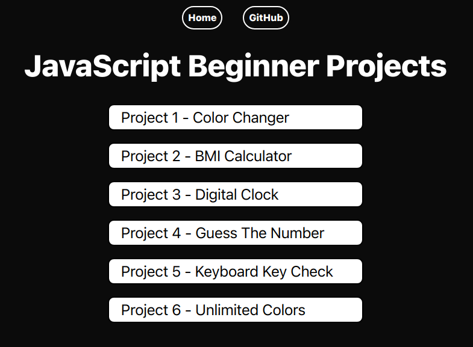
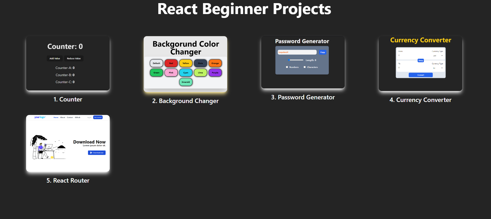

Hello! My Self
Sameer Saharan
I'm an Aspiring Full Stack Developer

About

I am a dedicated developer with strong problem-solving skills, a solid work ethic, and a firm commitment to teamwork. With experience in both Python and JavaScript, I have built several basic JavaScript projects, which have helped me gain a foundational understanding of React and its ecosystem. My expertise extends to Django and Django REST Framework, where I have successfully developed and deployed basic web applications, honing my skills in building robust and scalable solutions.
In addition to my programming capabilities, I possess very good knowledge of HTML and CSS, which enables me to create visually appealing and responsive web designs. My journey in web development has also provided me with a basic understanding of database technologies such as MySQL and MongoDB. I am eager to expand my knowledge and expertise further, particularly in advanced frameworks and modern development practices.
I believe in the power of structured problem-solving and efficient algorithms, and I am passionate about creating innovative solutions that address real-world challenges. My goal is to continuously improve my skills and contribute meaningfully to collaborative projects that drive success and create value.
Skills
Projects


Contact